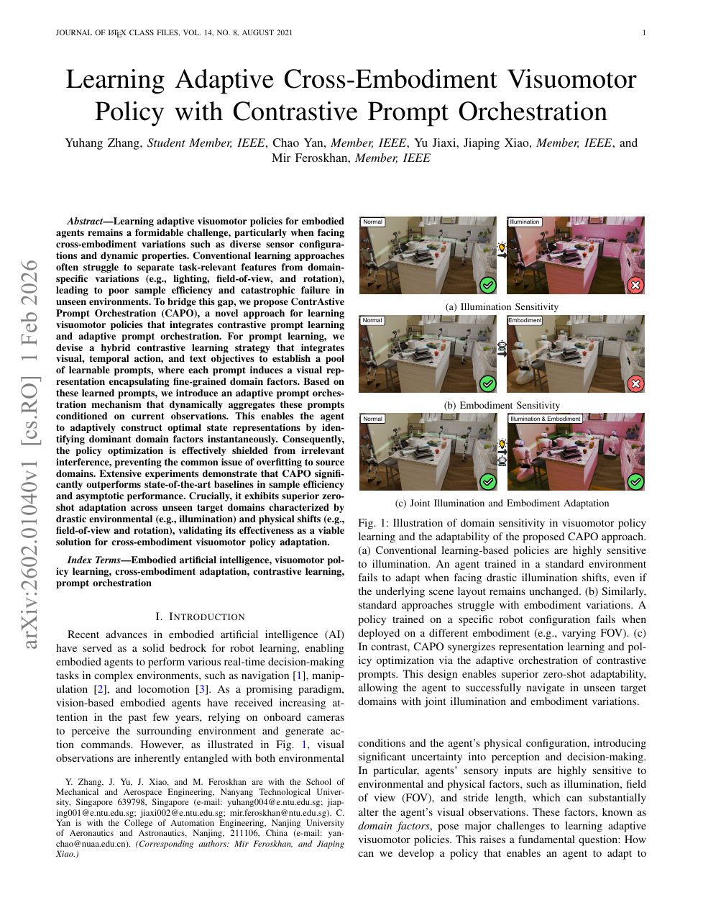

| 标题 | Learning Adaptive Cross-Embodiment Visuomotor Policy with Contrastive Prompt Orchestration（基于对比提示编排的自适应跨实体视觉运动策略学习） |
| 作者 | Yuhang Zhang（博士生，NTU）、Chao Yan（副教授，NUAA）、Jiaxi Yu（硕士生，NTU）、Jiaping Xiao（Research Fellow，NTU）、Mir Feroskhan（通讯作者，Assistant Professor，NTU） |
| 单位 | 南洋理工大学（NTU），机械与航空航天工程学院 / 南京航空航天大学（NUAA），自动化学院 |
| 发表 | arXiv:2602.01040v1，2026年2月（投稿至 IEEE 期刊） |
| TL;DR | 提出 CAPO（ContrAstive Prompt Orchestration）——一种结合对比提示学习与自适应提示编排的视觉运动策略学习框架，用于解决具身智能体在跨实体（不同传感器配置、动力学参数）和跨环境（光照、视角变化）条件下的零样本策略自适应问题。核心创新：混合对比提示学习（视觉 + 时序动作 + 文本三重对比目标）+ 双分支注意力编排机制，使智能体能够动态构建最优状态表征，在未见过的目标域中实现零样本策略迁移。在 AI2-THOR ObjectNav 任务上，CAPO 在源域 SR 达 97.9%、未见域 SR 达 86.4%，显著超越 CURL、ATC、ACO、ConPE 和 PPO 等基线方法。 |
| 灵感来源 | 启发产生的洞察 | 类型 |
|---|---|---|
| 视觉提示学习（Visual Prompting, Yang et al. 2023）——在 ViT 输入序列中插入可学习 token 来调制表征，而不修改骨干网络权重 | 在具身导航中，不同的域因素（光照、FOV、步长）可以对应不同的提示 token。通过对比学习优化这些提示，使每个提示"专精"于消除某一类域偏移的影响——这是一种参数高效的域自适应方法，K 个提示的总参数量远小于微调整个 CLIP 编码器 | 架构 |
| 对比学习（CURL, ATC, ConPE）在 RL 中的应用——通过正负样本对比学习解耦表征 | 单一对比目标（仅视觉或仅时序）无法同时应对视觉外观变化和实体配置变化的双重挑战。因此设计混合对比学习：视觉对比（InfoNCE + MSE）应对光照/色调偏移，时序动作对比（BYOL 式自蒸馏）应对 FOV/旋转/步长变化，文本对比（InfoNCE + 语义正则化）提供跨模态目标语义锚定——三种目标分别优化不同的提示子集 | 方法 |
| CLIP 的视觉-语言联合嵌入空间（Radford et al. 2021）——图像与文本在共享空间中语义对齐 | 将目标类别（如"碗"）编码为文本嵌入，作为语义锚点——无论视觉外观如何变化，目标类别的语义恒常不变。文本对比学习确保策略始终"记得它要找什么"，不受域偏移干扰。同时注入高斯噪声进行语义正则化，防止特征坍塌 | 策略 |
| BYOL 自蒸馏范式（Grill et al. 2020）——无需负样本的自监督学习 | 在时序动作对比学习中，传统对比方法需要定义负样本——但在动作空间中定义"有意义的负样本"极为困难（两个不同的动作不一定构成负样本）。采用 BYOL 的动量编码器 + 预测器架构，仅通过正样本对的 MSE 回归来学习动作一致性表征，避免了负样本定义的难题 | 数学 |
flowchart TB
subgraph INPUT["观测输入层"]
OBS["RGB观测 o_t · 3×224×224 · 第一视角"]
GOAL["目标类别 g ∈ C · 共12类 · one-hot编码"]
end
subgraph ENCODER["视觉编码层 · 冻结CLIP ViT-B/32"]
PATCH["Patch Embedding · N_p个视觉token · d=768"]
CLS["Class Token + 位置编码"]
TRANS["Transformer Encoder · J层 · 冻结参数"]
VANILLA["无提示嵌入 z_t^v · 512维"]
end
subgraph PROMPTS["对比提示学习层 · K=10个可学习提示"]
VIS_P["视觉提示 p^b,p^c,p^s,p^h · 4个 · 应对光照变化"]
ACT_P["动作提示 p^φ,p^θ,p^ψ,p^δ · 5个 · 应对实体变化"]
TXT_P["文本提示 p^t · 1个 · 语义锚定 · 不经过注意力"]
PROMPT_EMBED["提示嵌入 z_t^1~z_t^K · 经CLIP编码 · 512维"]
end
subgraph ATTENTION["自适应编排层 · 双分支注意力"]
LEARNABLE["可学习投影 · 2层MLP+SiLU → 注意力键k_k"]
COSINE["余弦相似度 · z_t^v vs z_t^k · 语义保真约束"]
SOFTMAX["α_k = softmax(s_k^a ⊙ s_k^c) · 自适应权重"]
FUSE["融合表征 z_t^f = z_t^v + z_t^t + Σα_k z_t^k · 残差连接"]
end
subgraph POLICY["策略优化层 · PPO + GRU"]
CONTEXT["观测嵌入 ô_t = [z_t^f, ḡ, e_{a_{t-1}}]"]
GRU["GRU · 512维隐状态 · 建模时序依赖"]
ACTOR["Actor头 · 动作分布 π(a_t|h_t) · 6个离散动作"]
CRITIC["Critic头 · 状态价值 V(h_t)"]
end
OBS --> PATCH --> CLS --> TRANS --> VANILLA
OBS --> PROMPT_EMBED
VANILLA --> COSINE
PROMPT_EMBED --> LEARNABLE
VANILLA --> LEARNABLE
LEARNABLE --> SOFTMAX
COSINE --> SOFTMAX
PROMPT_EMBED --> FUSE
VANILLA --> FUSE
TXT_P --> FUSE
SOFTMAX --> FUSE
FUSE --> CONTEXT
GOAL --> CONTEXT
CONTEXT --> GRU --> ACTOR
GRU --> CRITIC
VIS_P -.->|"视觉对比学习 · 对称InfoNCE+MSE"| PROMPT_EMBED
ACT_P -.->|"时序动作对比 · BYOL自蒸馏"| PROMPT_EMBED
TXT_P -.->|"文本对比学习 · InfoNCE+噪声正则化"| PROMPT_EMBED
ACTOR -.->|"PPO优化 · clip(ε=0.2)"| GRU
CRITIC -.->|"GAE优势估计 · λ=0.95"| GRU
classDef input fill:#fef7ed,stroke:#f59e0b,stroke-width:2px,color:#92400e
classDef encoder fill:#e8f0fe,stroke:#3b82f6,stroke-width:2px,color:#1d4ed8
classDef prompts fill:#f0ebfd,stroke:#8b5cf6,stroke-width:2px,color:#6d28d9
classDef attention fill:#e6f7ee,stroke:#10b981,stroke-width:2px,color:#047857
classDef policy fill:#ffe4e6,stroke:#f43f5e,stroke-width:2px,color:#be123c
class OBS,GOAL input
class PATCH,CLS,TRANS,VANILLA encoder
class VIS_P,ACT_P,TXT_P,PROMPT_EMBED prompts
class LEARNABLE,COSINE,SOFTMAX,FUSE attention
class CONTEXT,GRU,ACTOR,CRITIC policy
flowchart TB
subgraph PHASE1["阶段一: 对比提示学习 · 离线 · 冻结CLIP"]
direction LR
EXPERT["专家轨迹数据集 D · 1468条轨迹 · 22754样本"] --> AUG["数据增强 · 光照/动作/文本正样本对"]
AUG --> VIS_LOSS["视觉InfoNCE+MSE · 光照不变性"]
AUG --> ACT_LOSS["BYOL自蒸馏 · 动作一致性"]
AUG --> TXT_LOSS["文本InfoNCE+MSE+噪声 · 语义对齐"]
VIS_LOSS --> PROMPT_POOL["提示池 P={p_1,...,p_K} · K=10"]
ACT_LOSS --> PROMPT_POOL
TXT_LOSS --> PROMPT_POOL
end
subgraph PHASE2["阶段二: 自适应编排 · 在线RL · 冻结提示池+编码器"]
direction LR
OBS_IN["观测 o_t · 3×224×224"] --> VANILLA_EMB["无提示嵌入 z_t^v"]
OBS_IN --> PROMPTED_EMB["提示嵌入 {z_t^k} · 每个提示一种域视角"]
VANILLA_EMB --> DUAL_ATTN["双分支注意力 · 可学习投影 ⊙ 余弦相似度"]
PROMPTED_EMB --> DUAL_ATTN
DUAL_ATTN --> ATTENTION_W["注意力权重 α_k · softmax归一化"]
ATTENTION_W --> FUSED_Z["融合表征 z_t^f = z_t^v + z_t^t + Σα_k z_t^k"]
TXT_EMB["文本提示嵌入 z_t^t · 语义锚定 · 不经注意力"] --> FUSED_Z
end
subgraph PHASE3["阶段三: 策略推理 · PPO+GRU · 在线更新编排器+策略"]
direction LR
FUSED_Z --> OBS_VEC["观测向量 ô_t = [z_t^f, ḡ, e_{a_{t-1}}]"]
GOAL_IN["目标类别 g"] --> OBS_VEC
PREV_ACT["上一动作 a_{t-1}"] --> OBS_VEC
OBS_VEC --> GRU_LAYER["GRU · h_t = GRU(ô_t, h_{t-1}) · 512维"]
GRU_LAYER --> ACTOR_OUT["Actor: π(a_t|h_t) · 6维离散分布"]
GRU_LAYER --> CRITIC_OUT["Critic: V(h_t) · 标量"]
ACTOR_OUT --> ACTION["动作 a_t: MoveAhead/RotateLeft/RotateRight/LookUp/LookDown/End"]
end
subgraph DEPLOY["部署: 零样本跨实体自适应"]
direction LR
ACTION --> UNSEEN_DOMAIN["未见目标域 · 光照剧变 · FOV切换 · 实体异构"]
UNSEEN_DOMAIN --> ZERO_SHOT["零样本自适应 · 无微调 · 仅动态调整提示权重"]
ZERO_SHOT --> RESULT["SR 86.4% · SPL 0.54 · 显著超越基线"]
end
PHASE1 -->|"冻结提示池P"| PHASE2
PHASE2 -->|"融合表征z_t^f"| PHASE3
PHASE3 -->|"训练完成策略π"| DEPLOY
DUAL_ATTN -.->|"梯度: PPO→编排器"| ATTENTION_W
RESULT -.->|"反馈: 未见域→注意力权重自动适应"| ATTENTION_W
classDef phase1 fill:#fef7ed,stroke:#f59e0b,stroke-width:2px,color:#92400e
classDef phase2 fill:#e8f0fe,stroke:#3b82f6,stroke-width:2px,color:#1d4ed8
classDef phase3 fill:#e6f7ee,stroke:#10b981,stroke-width:2px,color:#047857
classDef deploy fill:#f0ebfd,stroke:#8b5cf6,stroke-width:2px,color:#6d28d9
class EXPERT,AUG,VIS_LOSS,ACT_LOSS,TXT_LOSS,PROMPT_POOL phase1
class OBS_IN,VANILLA_EMB,PROMPTED_EMB,DUAL_ATTN,ATTENTION_W,FUSED_Z,TXT_EMB phase2
class OBS_VEC,GOAL_IN,PREV_ACT,GRU_LAYER,ACTOR_OUT,CRITIC_OUT,ACTION phase3
class UNSEEN_DOMAIN,ZERO_SHOT,RESULT deploy
flowchart TD
subgraph STAGE1["阶段一: 数据收集与域因素配置"]
direction LR
S1["域因素定义 F_i=(φ,θ,ψ,δ,b,c,s,h) · 10个独立域因素"] --> S2["AI2-THOR FloorPlan21 · 12个目标类别"]
S2 --> S3["专家策略π_e 遍历 · 22754样本 · 1468条轨迹"]
S3 --> S4["轨迹对齐 · F1分数≥0.7 · 跨域配对数据集D"]
end
subgraph STAGE2["阶段二: 混合对比提示学习 · 离线训练"]
direction LR
T1["视觉对比 · 亮度/对比度/饱和度/色调增强"] --> T2["对称InfoNCE+MSE · L_visual"]
T3["时序动作对比 · 同动作不同上下文正样本对"] --> T4["BYOL动量编码器 · L_action"]
T5["文本对比 · 'a photo of [CLASS]'模板"] --> T6["InfoNCE+MSE+高斯噪声 · L_text"]
T2 --> T7["提示池P优化完成 · K=10 · 提示长度L=8"]
T4 --> T7
T6 --> T7
end
subgraph STAGE3["阶段三: 自适应编排 + 策略学习 · PPO在线"]
direction LR
P1["48并行环境 · 3M环境步"] --> P2["双分支注意力 · MLP投影+余弦相似度"]
P2 --> P3["融合表征z_t^f · 512维 · 残差连接"]
P3 --> P4["GRU+PPO · ε=0.2 · γ=0.99 · GAE λ=0.95"]
P4 --> P5["策略π收敛 · 源域SR 97.9%"]
end
subgraph STAGE4["阶段四: 零样本跨域跨实体部署"]
direction LR
D1["未见光照域 · 剧变亮度/色调"] --> D3["注意力自动重加权 · 光照提示↑"]
D2["未见实体域 · 异FOV/旋转/步长"] --> D4["注意力自动重加权 · 动作提示↑"]
D3 --> D5["零样本自适应 · 无微调"]
D4 --> D5
D5 --> D6["跨实体部署 · ManipulaTHOR→Stretch RE1→LoCoBot"]
end
STAGE1 -->|"配对数据集D"| STAGE2
STAGE2 -->|"冻结提示池P"| STAGE3
STAGE3 -->|"训练完成策略π"| STAGE4
P5 -.->|"反馈: 编排器参数→控制提示融合"| P2
D6 -.->|"验证: 零样本SR 86.4% · SPL 0.54"| D5
classDef stage1 fill:#fef7ed,stroke:#f59e0b,stroke-width:2px,color:#92400e
classDef stage2 fill:#e8f0fe,stroke:#3b82f6,stroke-width:2px,color:#1d4ed8
classDef stage3 fill:#e6f7ee,stroke:#10b981,stroke-width:2px,color:#047857
classDef stage4 fill:#f0ebfd,stroke:#8b5cf6,stroke-width:2px,color:#6d28d9
class S1,S2,S3,S4 stage1
class T1,T2,T3,T4,T5,T6,T7 stage2
class P1,P2,P3,P4,P5 stage3
class D1,D2,D3,D4,D5,D6 stage4
| 类别 | 内容 | 维度 |
|---|---|---|
| 输入 | RGB 第一视角观测 $o_t$（受域因素 $\mathcal{F}$ 调制）+ 目标类别 $g$（one-hot）+ 上一动作 $a_{t-1}$ | $o_t \in \mathbb{R}^{3 \times 224 \times 224}$，$g \in \{0,1\}^{12}$，$a_{t-1} \in \mathcal{A}$ |
| 输出 | 离散动作 $a_t$：前进（MoveAhead）、左转（RotateLeft）、右转（RotateRight）、上看（LookUp）、下看（LookDown）、结束（End） | $a_t \in \mathcal{A}$，$|\mathcal{A}| = 6$ |
| 成功条件 | 在 500 步内到达距离目标物体 1.0 m 以内，并执行"结束"动作 | SR（成功率），SPL（路径加权成功率），NE（导航误差），EL（回合长度） |
这是一个视觉运动策略学习的零样本域自适应问题——不是传统意义上的 sim-to-real transfer，而是在仿真环境内从源域到未见目标域的泛化。核心挑战在于：域因素（光照 + 实体配置）的变化导致视觉观测的像素分布发生根本性偏移，但底层任务结构（导航到目标物体）保持不变。平台：AI2-THOR 仿真环境（FloorPlan21），场景：室内目标导航（ObjectNav），任务：在 12 个目标类别中导航到指定类别，评价指标包括 SR/SPL/NE/EL。
表头用英文，正文用中文
| Prior Method | Core Idea | Why It Fails |
|---|---|---|
| End-to-End RL（端到端强化学习）— PPO [40], DRL drone racing [29] | 直接从原始像素映射到动作，视觉编码器与策略网络联合训练。在特定环境中可达到冠军级性能（如 Kaufmann et al. 2023 的无人机竞速） | （1）样本效率极低：从稀疏标量奖励中学习丰富的视觉表征极其低效，通常需要数百万次交互才能收敛；（2）域敏感性极高：一旦测试环境的像素分布与训练环境不同（光照改变、FOV 变化），策略立即崩溃——因为学到的"像素→动作"映射本质上是对训练域像素模式的过拟合；（3）灾难性遗忘：对未见域进行微调会导致源域性能丧失。 |
| Decoupled RL（解耦强化学习）— CURL [13], ATC [14], ConPE [44] | 将视觉表征学习与策略优化分离：先用自监督对比目标预训练视觉编码器，然后冻结编码器，在其上训练 RL 策略。样本效率显著优于端到端方法 | （1）表征静态僵化：编码器一旦训练完成就固定不变，无论当前面临的域偏移是什么，输出的特征完全相同——这导致在域发生变化时，表征无法自适应地"关注"当前最相关的特征维度；（2）对比目标不全面：CURL 仅做视觉增强对比，ATC 仅做时序对比，ConPE 缺少文本语义锚定——单一对比目标无法同时覆盖视觉外观变化和实体配置变化的全部挑战。 |
| Domain Randomization（域随机化）— [9], [10], [11] | 在仿真中随机化视觉纹理、光照、物理参数等，让策略在大量随机环境中训练，以期望在真实环境中泛化 | （1）需要精心设计随机化分布——分布范围太小则泛化不够，范围太大则策略学不到有效行为；（2）保守行为：域随机化训练出的策略倾向于采用过于保守的行为，在每个具体环境中都表现次优——它"学会了适应一切"但代价是"不擅长任何特定环境"；（3）不能处理跨实体泛化——随机化物理参数不等于改变机器人平台。 |
| Frozen Pretrained Models（冻结预训练模型）— CLIP-based [19], ZSON [19], LM-Nav [20] | 利用大规模预训练模型（如 CLIP）的泛化能力，直接将其作为冻结的视觉骨干，在上面训练或微调策略 | （1）表征仍然是静态的：虽然 CLIP 的预训练表征比从零训练的编码器更鲁棒，但它仍然是一个固定的映射函数——在光照剧变或 FOV 切换时，CLIP 的嵌入也会漂移；（2）缺乏任务特异性：CLIP 是在互联网图片-文本对上训练的，其表征虽然通用但并未针对具身导航的特定需求（如动作一致性、目标导向）进行优化。 |
| Visual Prompt Learning（视觉提示学习）— CoOP [32], MaPLe [34], Fine-grained Visual Prompting [33] | 在冻结的视觉 Transformer 中插入可学习的提示 token，以参数高效的方式适配下游任务 | （1）仅用于静态视觉任务（图像分类、检测），从未被应用于具身决策——因为具身任务涉及时序决策和动作执行，单纯调整视觉表征不足以应对；（2）缺乏域感知能力：传统提示学习为每个任务学习一套固定提示，不具备根据不同域条件动态调整的机制。 |
CAPO 的核心由两个紧密协作的阶段组成：(1) 对比提示学习——通过混合对比目标离线训练 K 个域特定视觉提示；(2) 自适应提示编排——通过双分支注意力机制在线动态融合提示嵌入，与 PPO 策略联合优化。以下逐层拆解关键公式。
LaTeX rendered by MathJax. 显示公式用 $$...$$，行内公式用 $...$。符号解释用中文。
| 参数 | 取值 | 含义 | 为什么取这个值 |
|---|---|---|---|
| 提示数量 K | 10 | 域特定视觉提示的总数 | 4 个光照提示 + 5 个动作属性提示 + 1 个文本提示 = 10 = 域因素的总数。实验验证 K=10 是最优的——K<10 提示容量不足以覆盖所有域因素，K=12 引入冗余导致过拟合源域 |
| 提示长度 L | 8 | 每个提示包含的 token 数量 | L=4 表达能力不足（欠拟合），L=24 过度拟合源域视觉纹理（过拟合），L=8 在表达能力和泛化之间取得最优平衡 |
| 视觉骨干网络 | CLIP ViT-B/32 | 冻结的图像编码器，$d_{\text{out}}=512$ | CLIP 的图文对齐预训练提供了丰富的语义先验——相比从零训练的编码器，大幅提升了样本效率和泛化能力 |
| PPO 裁剪范围 | $\varepsilon = 0.2$ | 策略更新幅度限制 | 标准 PPO 默认值——在稳定性和更新速度之间取得平衡 |
| 语义噪声标准差 | $\sigma = 0.1$ | 文本对比学习中注入的高斯噪声标准差 | $\sigma=0$ 无正则化导致过拟合源域；$\sigma \in \{0.3, 0.5\}$ 噪声过大破坏特征完整性；$\sigma=0.1$ 在正则化效果和特征保真度之间取得最优点 |
| 训练环境步数 | 3M | PPO 训练的总环境交互步数 | 48 并行环境 x rollout 长度 100 x 更新轮次——足以让策略充分收敛 |
理解 CAPO 需要掌握三个关键基础原理：对比提示学习（如何用混合对比目标训练域特定提示）、自适应提示编排（如何根据观测动态融合多提示嵌入）、以及提示编排与策略优化的统一理论（为什么这种设计能够保证泛化误差界）。
三种目标的互补性是 CAPO 设计的核心巧思：视觉对比处理的是"看到的东西看起来不一样了"（外观变化），动作对比处理的是"做动作的方式不一样了"（实体配置变化），文本对比处理的是"但目标本身没有变"（语义恒常性）。三者共同构成一个完备的域因素覆盖——任何一个目标的缺失都会导致对应维度的表征退化（消融实验已验证）。
| 对比目标 | 优化的提示 | 应对的域偏移 | 为何选择该对比范式 |
|---|---|---|---|
| 视觉对比（InfoNCE + MSE） | 光照提示 p^b, p^c, p^s, p^h | 亮度、对比度、饱和度、色调 4 个连续光照参数的变化 | 光照变化是可以"精确控制"的（通过图像处理生成增强版本），因此可以明确定义正负样本 → InfoNCE 适用。MSE 正则化强制正样本对精确对齐 |
| 时序动作对比（BYOL 自蒸馏） | 动作提示 p^φ, p^θ, p^ψ, p^δ | FOV、旋转角、俯仰角、步长 4 个实体参数的变化 | 实体配置的变化无法通过图像处理模拟（需要重新渲染），且动作空间中负样本定义困难 → BYOL 不需要负样本，仅通过正样本对回归学习恒常性 |
| 文本对比（InfoNCE + 噪声正则化） | 文本提示 p^t | 目标语义在任何域条件下的不变性 | 文本锚点是预计算且固定的——类别名称"碗"的语义不会因为光照或 FOV 改变而变化。InfoNCE 确保跨模态对齐，高斯噪声正则化防止过拟合 |
融合表征的残差设计：$z_t^f = z_t^v + z_t^t + \sum \alpha_k z_t^k$。无提示嵌入 $z_t^v$ 作为残差项直接保留——这确保了即使所有提示权重都很低（例如在完全异常的域条件下），策略仍能依赖 CLIP 的原始通用表征工作，不会完全失效。文本提示嵌入 $z_t^t$ 也直接融合而不经过注意力——因为目标语义在任何域条件下都应该被保留，不应该被注意力机制"过滤"掉。这种设计体现了渐进式增强的理念：基础 = CLIP 通用表征 + 目标语义，增强 = 域特定提示的加权融合。
定理 1 的实践意义：它解释了为什么 CAPO 能在未见域上实现零样本自适应——因为泛化误差不依赖于目标域数据的可用性。逼近误差项只依赖于提示池的多样性（由训练阶段的混合对比学习保证）和注意力权重的优化（由编排阶段与 PPO 联合优化保证），而不需要目标域的任何数据。这使得 CAPO 从根本上不同于需要通过目标域数据来降低误差的传统域自适应方法。
下图由本地 PDF Zhang et al. - 2026 - Learning adaptive cross-embodiment visuomotor policy with contrastive prompt orchestration.pdf 第 1 页直接渲染，用于核对论文的框架或首个主要实验图。

Local PDF page 1; no external or fabricated asset.
| 数据问题 | 潜在困难 | 严重程度 |
|---|---|---|
| 训练域与测试域的域因素差异过大 | 如果测试域的域因素组合完全偏离训练分布（例如训练时从未见过极低亮度 + 极小 FOV 的组合），提示编排可能无法找到合适的权重组合。定理 1 的逼近误差界依赖于提示池在训练分布上的多样性——但训练分布和测试分布之间的分布外（OOD）泛化没有理论保障 | 严重 |
| 文本对比目标的场景依赖性 | 文本对比要求目标类别有明确的语义标签（"碗"、"苹果"等），但在很多机器人任务中目标无法简单用一个词描述（如"前往走廊尽头的第三个门"）。扩展到更复杂的语言指令需要更强大的文本理解和跨模态对齐能力 | 高 |
| 提示数量 K 的敏感性 | 实验显示 K=10 最优，K=12 反而退化（引入冗余和过拟合）。在真实部署中，域因素的数量和类型可能未知——如果实际域因素多于 K，泛化性能可能受损 | 中 |
| 两阶段训练的累积误差 | 阶段一的提示学习误差（对比损失未充分收敛）会传播到阶段二的策略学习——因为编排器的输入特征质量受提示优化程度的直接影响。当前论文未讨论两阶段之间的误差传播问题 | 中 |
| 参考文献 | 为什么重要 |
|---|---|
| Radford et al. (2021) — CLIP: Learning Transferable Visual Models from Natural Language Supervision. ICML | CAPO 的视觉骨干和所有对比学习的语义锚定都基于 CLIP。理解 CLIP 的架构（ViT + 对比图文预训练）是理解 CAPO 的前提。CLIP 的"图文联合嵌入空间"是将"语义恒常性"注入策略的核心机制。 |
| Yang et al. (2023) — Fine-grained Visual Prompting. NeurIPS | CAPO 的提示学习机制的技术基础——在冻结 ViT 中插入可学习 token 来调制输出表征。与 CAPO 的区别：Fine-grained Visual Prompting 用于静态图像任务，CAPO 将其扩展到具身决策的时序场景。 |
| Grill et al. (2020) — BYOL: Bootstrap Your Own Latent. NeurIPS | CAPO 的时序动作对比学习采用 BYOL 的自蒸馏范式——这是关键的工程选择：在动作空间中 InfoNCE 的负样本定义困难，BYOL 通过纯正样本对回归避免了这一问题。 |
| Choi et al. (2024) — ConPE: Contrastive Prompt Ensemble for Embodied Agents. NeurIPS | CAPO 最直接的竞争对手——同样使用 CLIP 和视觉提示进行具身策略学习。CAPO 在三个关键方面超越了 ConPE：(1) 混合对比 vs 单一对比；(2) 双分支注意力 vs 单模注意力；(3) 文本语义锚定 vs 纯视觉。SR 在源域 97.9% vs 96.1%，在未见域 86.4% vs 59.8%。 |
| Schulman et al. (2017) — PPO: Proximal Policy Optimization Algorithms. arXiv | CAPO 使用的 RL 算法。PPO 的 clip 机制为编排器参数与策略参数的联合优化提供了稳定的梯度信号——防止一次更新过大破坏编排器的注意力分布。 |